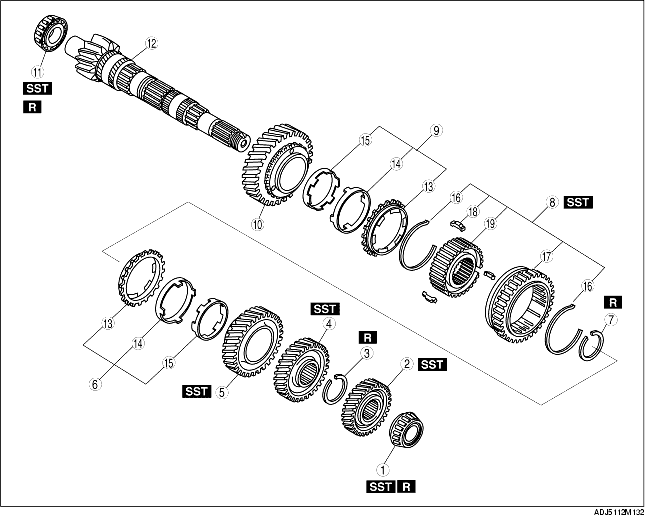
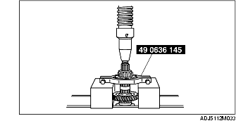
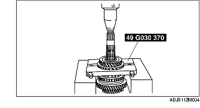
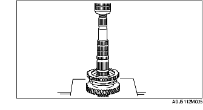
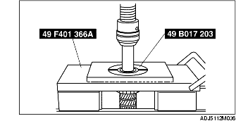

Secondary shaft components disassembly
B3E051517301102
1. Disassemble in the order indicated in the table.

Bearing and Secondary 4th Gear Disassembly Note
1. Remove the bearing and secondary 4th gear using the SST.

Secondary 3rd Gear and 2nd Gear Disassembly Note
1. Remove the retaining ring.
2. Shift the gears to 1st gear.
3. Remove the secondary 3rd gear and 2nd gear using the SST.

1st/2nd Clutch Hub Component, 1st Synchronizer Ring, and 1st Gear Disassembly Note
1. Remove the retaining ring.
2. Remove the 1st/2nd clutch hub component, 1st synchronizer ring, and 1st gear using a press.

Bearing (Secondary Shaft End) Disassembly Note
1. Remove the bearing using the SSTs.
